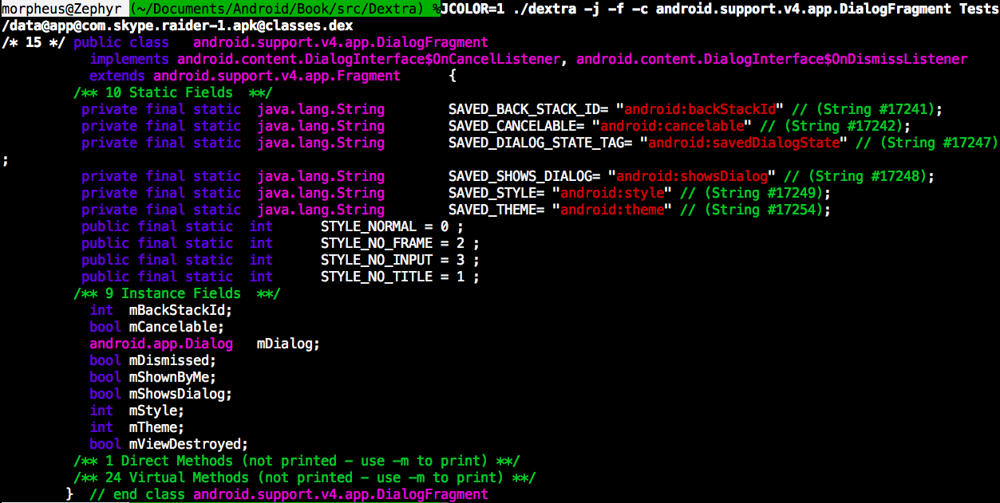
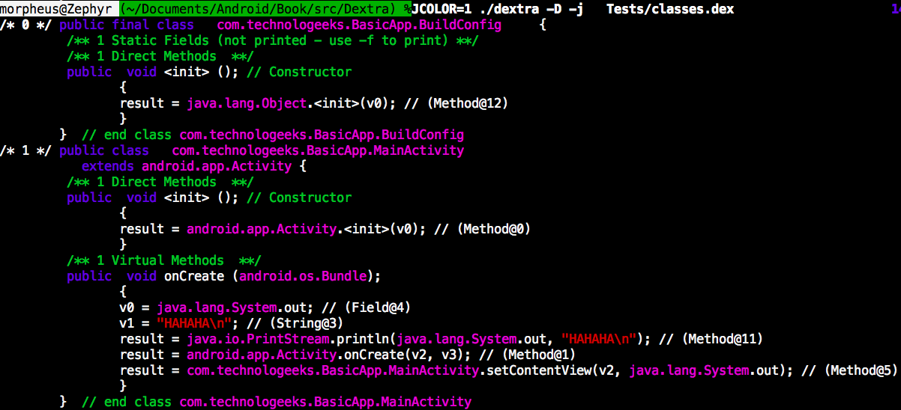
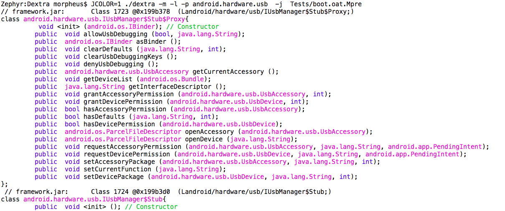

The dextra utility began its life as an alternative to the AOSP's dexdump and dx --dump, both of which are rather basic, and produce copious, but unstructured output. In addition to supporting all their features, it also supports various output modes, specific class, method and field lookup, as well as determining static field values. I later updated it to support ART (which is also one of the reasons why the tool was renamed).
The dextra tool is provided as one of the free downloads provided for the "Android Internals" book (http://NewAndroidBook.com/). You are welcome to use it even if you don't buy the book (though naturally you're even more welcome to buy the book :-). Its method of operation and a lot more about Dalvik internals is covered in detail, in Chapters 10 and 11. Its latest version, as a tar file with binaries for OS X, Linux/Android x86_64 or Linux/Android ARMv7, can always be obtained at this page right here.
You might want to check back frequently, as I'm currently updating the tool, and adding features, specifically in the decompilation department. Latest compilation date (Jan 27th 2015) supports significant improvements to the disassembler and decompiler engine.
For updates, you might want to check out the RSS feed, or follow my company's feed, @Technologeeks, which (aside from the occasional OS X/iOS related stuff) tweets about updates to this and other tools.
If you want to learn how Dextra actually works - DEX and ART get almost a full day in the Android Internals & Reverse Engineering Training course my company, Technologeeks, offers. The next training opens in NYC, February 8th, 2016! Come join us!
Examples
dextra is designed to be fairly easy to use either independently or as a scriptable component. Some examples follow:
With no arguments, dextra will try to explain itself as clearly as possible:
morpheus@Zephyr (~)$ dextra
Usage: ./dextra [...] _file_
Where: _file_ = DEX or ART/OAT file to open
And [...] can be any combination of:
-l List contents of file (classes is in dex, oat, or ART)
-c: Only process this class
-m: show methods for processed classes (implies -c *)
-f: show fields for processed classes (implies -c *)
-p: Only process classes in this package
-d: Disassemble DEX code sections (like dexdump does - implies -m)
-D: Decompile to Java (new feature, still working on it. Implies -j -m)
DEX specific options:
-h: Just dump file header
-M [_index_]: Dump Method at _index_, or dump all methods
-F [_index_]: Dump Field at _index_, or dump all fields
-S [_index_]: Dump String at _index_, or dump all strings
-T [_index_]: Dump Type at _index_, or dump all types
OAT specific options:
-h: Just dump file header
-dextract Extract embedded DEX content from an OAT files
-o Display addresses as offsets (useful for file editing/fuzzing)
-delta value Apply Patch delta
ART specific options:
-delta value Apply Patch delta
-deep Deep dump (go into object arrays)
And you can always use any of these output Modifiers:
-j: Java style output (default is JNI, but this is much better)
-v: verbose output
-color: Color output (can also set JCOLOR=1 environment variable)
This is DEXTRA, version 1.17.64 (Andevcon SC Edition), compiled on Dec 1 2015.
For more details and the latest version of this tool: http://NewAndroidBook.com/tools/dextra.html
Please let me know you're using it- by visiting http://NewAndroidBook.com/tools/counter?dextra once
In its basic usage, dextra with just a DEX, ODEX, ART or OAT argument will display the classes:
morpheus@Zephyr (~)$ dextra dalvik-cache/data@app@com.skype.raider-1.apk@classes.dex | more
Class 0: abstract android.support.v4.accessibilityservice.AccessibilityServiceInfoCompat$AccessibilityServiceInfoVersionImpl
File: AccessibilityServiceInfoCompat.java
5 Virtual Methods
Class 1: android.support.v4.accessibilityservice.AccessibilityServiceInfoCompat$AccessibilityServiceInfoStubImpl
implements Landroid/support/v4/accessibilityservice/AccessibilityServiceInfoCompat$AccessibilityServiceInfoVersionImpl;
File: AccessibilityServiceInfoCompat.java
1 Direct Methods
5 Virtual Methods
..
Things get more interesting when you use -m (to display methods), -f (to display fields) and -j (for Java-style output). -v (verbose) is optional, and will print out class, field, method and string indices as Java comments. Since classes.dex normally contains hundreds of classes, a good idea is to use "-c ..." to filter for the class you want.
morpheus@Zephyr (~)$ dextra -v -j -m -c android.support.v4.content.IntentCompat -f data@app@com.skype.raider-1.apk@classes.dex
/* 112 */ public class android.support.v4.content.IntentCompat {
/** 8 Static Fields **/
/* 360:497 */ public final static java.lang.String ACTION_EXTERNAL_APPLICATIONS_AVAILABLE= "android.intent.action.EXTERNAL_APPLICATIONS_AVAILABLE" // (String #17188);
/* 360:498 */ public final static java.lang.String ACTION_EXTERNAL_APPLICATIONS_UNAVAILABLE= "android.intent.action.EXTERNAL_APPLICATIONS_UNAVAILABLE" // (String #17189);
/* 360:499 */ public final static java.lang.String EXTRA_CHANGED_PACKAGE_LIST= "android.intent.extra.changed_package_list" // (String #17212);
/* 360:500 */ public final static java.lang.String EXTRA_CHANGED_UID_LIST= "android.intent.extra.changed_uid_list" // (String #17213);
/* 360:501 */ public final static java.lang.String EXTRA_HTML_TEXT= "android.intent.extra.HTML_TEXT" // (String #17206);
/* 360:502 */ public final static int FLAG_ACTIVITY_CLEAR_TASK = 32768 // 0x8000;
/* 360:503 */ public final static int FLAG_ACTIVITY_TASK_ON_HOME = 16384 // 0x4000;
/* 360:504 */ private final static android.support.v4.content.IntentCompat$IntentCompatImpl IMPL;
/** 5 Direct Methods **/
/* 360:2125 */ static void (); // Class Constructor
/* 360:2126 */ private void (); // Constructor
/* 360:2127 */ public static android.content.Intent makeMainActivity (android.content.ComponentName);
/* 360:2128 */ public static android.content.Intent makeMainSelectorActivity (java.lang.String, java.lang.String);
/* 360:2129 */ public static android.content.Intent makeRestartActivityTask (android.content.ComponentName);
} // end class android.support.v4.content.IntentCompat
The x:y notation is for the class index and field/method index. As the above shows, dextra will automatically determine static values for Java primitive types, if found in the static values of the class.
You can lookup specific fields, method, or strings, with -F, -M, and -S respectively - like so:
Things are even better in color, which you can use with --color or by setting the environment variable of JCOLOR to 1. This produces this nice output:

New features in 1.2
-c and -p can now be used on OAT files: Super useful for quickly locating a class or package in a jumbo .oat like boot.oat:
# Example: Locate all classes of package android.widget in boot.oat
morpheus@Zephyr (~)$ dextra -p android.widget Tests/boot.oat
framework.jar: Class 95 @0x1560890 (Landroid/widget/AdapterView$OnItemClickListener;)
framework.jar: Class 97 @0x15608a8 (Landroid/widget/Adapter;)
framework.jar: Class 98 @0x15608ac (Landroid/widget/ListAdapter;)
framework.jar: Class 99 @0x15608b0 (Landroid/widget/SpinnerAdapter;)
framework.jar: Class 100 @0x15608b4 (Landroid/widget/BaseAdapter;)
...
...
framework.jar: Class 5773 @0x15c6ce4 (Landroid/widget/ZoomButtonsController;)
framework.jar: Class 5774 @0x15c6de0 (Landroid/widget/ZoomControls;)
# Example II: Dump class android.widget.ZoomButton
morpheus@zephyr (~)$ ./dextra -j -m -c android.widget.ZoomButton Tests/boot.oat
// framework.jar: Class 5765 @0x15c6bec (Landroid/widget/ZoomButton;)
class android.widget.ZoomButton{
public void (android.content.Context); // Constructor
public void (android.content.Context, android.util.AttributeSet); // Constructor
public void (android.content.Context, android.util.AttributeSet, int); // Constructor
public void (android.content.Context, android.util.AttributeSet, int, int); // Constructor
static bool access$000 (android.widget.ZoomButton);
static long access$100 (android.widget.ZoomButton);
static android.os.Handler access$200 (android.widget.ZoomButton);
public bool dispatchUnhandledMove (android.view.View, int);
public void onInitializeAccessibilityEvent (android.view.accessibility.AccessibilityEvent);
public void onInitializeAccessibilityNodeInfo (android.view.accessibility.AccessibilityNodeInfo);
public bool onKeyUp (int, android.view.KeyEvent);
public bool onLongClick (android.view.View);
public bool onTouchEvent (android.view.MotionEvent);
public void setEnabled (bool);
public void setZoomSpeed (long);
};
-dextract: will extract the DEX file(s) from the OAT file
morpheus@Zephyr (~/Documents/Android/Book/src/Dextra) % dextra -dextract Tests/boot.oat
Written to system@framework@core-libart.jar@classes.dex
Written to system@framework@conscrypt.jar@classes.dex
Written to system@framework@okhttp.jar@classes.dex
Written to system@framework@core-junit.jar@classes.dex
Written to system@framework@bouncycastle.jar@classes.dex
Written to system@framework@ext.jar@classes.dex
Written to system@framework@framework.jar@classes.dex
Written to system@framework@framework.jar:classes2.dex@classes.dex
Written to system@framework@telephony-common.jar@classes.dex
Written to system@framework@voip-common.jar@classes.dex
Written to system@framework@ims-common.jar@classes.dex
Written to system@framework@mms-common.jar@classes.dex
Written to system@framework@android.policy.jar@classes.dex
Written to system@framework@apache-xml.jar@classes.dex
-D Decompile, not just disassemble. That is, produce Java code. This may be used indepdently of -d (to show both decomp and disass). This is experimental, however - still working on it (e.g. that ";" after the class name..)

New features in 1.3
As of 1.3 DexTRA recognizes ART reflected classes, but at this point using hard-coded offsets. This will most likely render it incompatible with future releases (*sigh*), but the only way to make this forward-compatible would be to implement a mini-reflection engine inside DexTRA itself. Which I will, probably, at some point. But now is not that point.
With the functions in the code, it's trivial to turn DexTRA into a fuzzer. I personally see this as a fairly fruitless endeavor, since even if there is some heinous overflow in the ART parser (and there is, I can practically guarantee), one would have to write to /data/dalvik-cache (or /system/framework/../boot.oat|art), which requires system access. And if you have system, you're pretty much done.
New features in 1.5
With no arguments, will simply print out what type of file (OAT/ART version) you're passing in
-h will now just show the header and nothing else. There's a new -l switch to list contents.
The -c and -p switches now extended to work inside OAT and ART:
# Locate specific class in an out
Zephyr:Dextra morpheus$ ./dextra -c com.sec.widget.lso.internal.LSOWidgetView Tests/boot.oat.s6.arm64
sec_edm.jar: Class 565 @0x234c3f4 (Lcom/sec/widget/lso/internal/LSOWidgetView;)
# Dump specific class, as Java, with Methods
Zepyhr:Dextra morpheus$ ./dextra -c android.app.ActivityManager -m -f -j -v Tests/boot.oat.Mpre
// framework.jar:classes2.dex: Class 94 @0x19c0014 (Landroid/app/ActivityManager;)
class android.app.ActivityManager{
/* 186:1166 */ static java.lang.String -get0 ();
/* 186:1167 */ static void (); // Class Constructor
/* 186:1168 */ void (android.content.Context, android.os.Handler); // Constructor
/* 186:1170 */ public static int checkComponentPermission (java.lang.String, int, int, bool);
/* 186:1171 */ public static int checkUidPermission (java.lang.String, int);
/* 186:1176 */ public static void dumpPackageStateStatic (java.io.FileDescriptor, java.lang.String);
/* 186:1177 */ private static void dumpService (java.io.PrintWriter, java.io.FileDescriptor, java.lang.String, java.lang.String[]);
/* 186:1178 */ private void ensureAppTaskThumbnailSizeLocked ();
/* 186:1183 */ public static int getCurrentUser ();
/* 186:1184 */ public static int getDefaultAppRecentsLimitStatic ();
/* 186:1190 */ static int getLauncherLargeIconSizeInner (android.content.Context);
/* 186:1192 */ public static int getMaxAppRecentsLimitStatic ();
/* 186:1193 */ public static int getMaxRecentTasksStatic ();
/* 186:1196 */ public static void getMyMemoryState (android.app.ActivityManager$RunningAppProcessInfo);
/* 186:1210 */ public static int handleIncomingUser (int, int, int, bool, bool, java.lang.String, java.lang.String);
/* 186:1211 */ public static bool isHighEndGfx ();
/* 186:1215 */ public static bool isLowRamDeviceStatic ();
/* 186:1216 */ public static bool isRunningInTestHarness ();
/* 186:1217 */ public static bool isUserAMonkey ();
/* 186:1230 */ public static int staticGetLargeMemoryClass ();
/* 186:1231 */ public static int staticGetMemoryClass ();
/* 186:1169 */ public int addAppTask (android.app.Activity, android.content.Intent, android.app.ActivityManager$TaskDescription, android.graphics.Bitmap);
/* 186:1172 */ public bool clearApplicationUserData ();
/* 186:1173 */ public bool clearApplicationUserData (java.lang.String, android.content.pm.IPackageDataObserver);
/* 186:1174 */ public void clearWatchHeapLimit ();
/* 186:1175 */ public void dumpPackageState (java.io.FileDescriptor, java.lang.String);
/* 186:1179 */ public void forceStopPackage (java.lang.String);
/* 186:1180 */ public void forceStopPackageAsUser (java.lang.String, int);
/* 186:1181 */ public android.util.Size getAppTaskThumbnailSize ();
/* 186:1182 */ public java.util.List getAppTasks ();
/* 186:1185 */ public android.content.pm.ConfigurationInfo getDeviceConfigurationInfo ();
/* 186:1186 */ public int getFrontActivityScreenCompatMode ();
/* 186:1187 */ public int getLargeMemoryClass ();
/* 186:1188 */ public int getLauncherLargeIconDensity ();
/* 186:1189 */ public int getLauncherLargeIconSize ();
/* 186:1191 */ public int getLockTaskModeState ();
/* 186:1194 */ public int getMemoryClass ();
/* 186:1195 */ public void getMemoryInfo (android.app.ActivityManager$MemoryInfo);
/* 186:1197 */ public bool getPackageAskScreenCompat (java.lang.String);
/* 186:1198 */ public int getPackageImportance (java.lang.String);
/* 186:1199 */ public int getPackageScreenCompatMode (java.lang.String);
/* 186:1200 */ public android.os.Debug$MemoryInfo[] getProcessMemoryInfo (int[]);
/* 186:1201 */ public java.util.List getProcessesInErrorState ();
/* 186:1202 */ public java.util.List getRecentTasks (int, int);
/* 186:1203 */ public java.util.List getRecentTasksForUser (int, int, int);
/* 186:1204 */ public java.util.List getRunningAppProcesses ();
/* 186:1205 */ public java.util.List getRunningExternalApplications ();
/* 186:1206 */ public android.app.PendingIntent getRunningServiceControlPanel (android.content.ComponentName);
/* 186:1207 */ public java.util.List getRunningServices (int);
/* 186:1208 */ public java.util.List getRunningTasks (int);
/* 186:1209 */ public android.app.ActivityManager$TaskThumbnail getTaskThumbnail (int);
/* 186:1212 */ public bool isInHomeStack (int);
/* 186:1213 */ public bool isInLockTaskMode ();
/* 186:1214 */ public bool isLowRamDevice ();
/* 186:1218 */ public bool isUserRunning (int);
/* 186:1219 */ public void killBackgroundProcesses (java.lang.String);
/* 186:1220 */ public void killUid (int, java.lang.String);
/* 186:1221 */ public void moveTaskToFront (int, int);
/* 186:1222 */ public void moveTaskToFront (int, int, android.os.Bundle);
/* 186:1223 */ public bool removeTask (int);
/* 186:1224 */ public void restartPackage (java.lang.String);
/* 186:1225 */ public void setFrontActivityScreenCompatMode (int);
/* 186:1226 */ public void setPackageAskScreenCompat (java.lang.String, bool);
/* 186:1227 */ public void setPackageScreenCompatMode (java.lang.String, int);
/* 186:1228 */ public void setWatchHeapLimit (long);
/* 186:1229 */ public void startLockTaskMode (int);
/* 186:1232 */ public void stopLockTaskMode ();
/* 186:1233 */ public bool switchUser (int);
};
# Locate package, dumping its classes
Zepyhr:Dextra morpheus $ ./dextra -l -p android.hardware.usb -j Tests/boot.oat
L (5.0) OAT file (039)
// framework.jar: Class 2290 @0x1586ee0 (Landroid/hardware/usb/IUsbManager;)
class android.hardware.usb.IUsbManager;
// framework.jar: Class 2291 @0x1586ee4 (Landroid/hardware/usb/IUsbManager$Stub$Proxy;)
class android.hardware.usb.IUsbManager$Stub$Proxy;
...
# Can also use grep, of course:
Zephyr:Dextra morpheus$ ./dextra -l -j Tests/boot.oat.Mpre | grep -i android/hardware/usb
// framework.jar: Class 1723 @0x199b378 (Landroid/hardware/usb/IUsbManager$Stub$Proxy;)
// framework.jar: Class 1724 @0x199b3d0 (Landroid/hardware/usb/IUsbManager$Stub;)
// framework.jar: Class 1725 @0x199b3e4 (Landroid/hardware/usb/UsbAccessory$1;)
// framework.jar: Class 1726 @0x199b3fc (Landroid/hardware/usb/UsbAccessory;)
// framework.jar: Class 1727 @0x199b440 (Landroid/hardware/usb/UsbConfiguration$1;)
// framework.jar: Class 1728 @0x199b458 (Landroid/hardware/usb/UsbConfiguration;)
// framework.jar: Class 1729 @0x199b494 (Landroid/hardware/usb/UsbDevice$1;)
// framework.jar: Class 1730 @0x199b4ac (Landroid/hardware/usb/UsbDevice;)
// framework.jar: Class 1731 @0x199b524 (Landroid/hardware/usb/UsbEndpoint$1;)
// framework.jar: Class 1732 @0x199b53c (Landroid/hardware/usb/UsbEndpoint;)
// framework.jar: Class 1733 @0x199b574 (Landroid/hardware/usb/UsbInterface$1;)
// framework.jar: Class 1734 @0x199b58c (Landroid/hardware/usb/UsbInterface;)
// framework.jar: Class 1735 @0x199b5cc (Landroid/hardware/usb/UsbRequest;)
// framework.jar:classes2.dex: Class 833 @0x19c7948 (Landroid/hardware/usb/IUsbManager;)
// framework.jar:classes2.dex: Class 834 @0x19c794c (Landroid/hardware/usb/UsbConstants;)
// framework.jar:classes2.dex: Class 835 @0x19c7954 (Landroid/hardware/usb/UsbDeviceConnection;)
// framework.jar:classes2.dex: Class 836 @0x19c79c8 (Landroid/hardware/usb/UsbManager;)
and, of course, with color:

New features in 1.17.64 (new versioning scheme)
01/27/2015 Changes: Better DEX bytecode handling
Dumps fill-array-data
Handles instance-of, throw, and many other instructions
signed/unsigned glitches fix
Decompilation now handles const assignments
Handles and resolves offsets
Full smali disassembly (not just opcodes, as was previous version)
Versioning scheme changed - version is now 1.artVersion.oatVersion. This ensures monotonically increasing version numbers with Google's capricious changes. I've also included the exact compilation date, so you can see if you have the latest version.
Android M Preview 2 through Final (OAT 064 and ART 017, hence version number 1.17.64) support. Why Google keeps changing the internal structure of ART breaking compatibility so bad eludes me. But (so far) I'm keeping up. Strings are different (again), and most importantly the ART header is entirely incompatible with previous versions - but at least makes more sense.
Zephyr:Dextra morpheus$ ./dextra -v -h boot.art.Mpre2
M (PR2) ART File (017)
Image Begin: 70000000
Image size: c78590 (13075856)
Image Bitmap: 25000 @0xc79000-0xc9e000 (relocated separately from image base)
(likely) size of pointer: 8
(likely) compile PIC: 0
Patch Delta: 0x0 (0)
Checksum: 0x2b1cc65 (45206629)
OAT file: 0x70c79000-0x74a83000 (not part of this image)
OAT data: 0x70c7a000-0x74a81fec (not part of this image)
Objects: @0-9468288 (9468288 bytes)
ART fields: @9468288-9981264 (512976 bytes)
ART Methods: @9981264-12830992 (2849728 bytes)
Interned Strings: @12830992-13075856 (244864 bytes)
Image Bitmap: @13078528-13230080 (151552 bytes)
METHOD ROOTS: # Simplified, somewhat
kResolutionMethod: 0x70c3c7c0
kImtConflictMethod: 0x70c3c7f8
kImtUnimplementedMethod: 0x70c3c830
kCalleeSaveMethod: 0x70c3c868
kRefsOnlySaveMethod: 0x70c3c8a0
kRefsAndArgsSaveMethod: 0x70c3c8d8
Only two image roots now. Rest are method roots
2 Image roots detected @0x70615ff0
kDexCaches: 0x705be1c8
kClassRoots: 0x70616008
Note: I am discontinuing support for ART 015/OAT 062 since they're likely to not ever see the light of day again as M progressed into final (which is compatible with PR2).
# of image roots no longer hard coded for any version. Dynamically locating image roots and classes on the fly (working with ART's own reflection)
Output even more grep(1) friendly, so that to look for a specific class at an address you can:
Added -delta to apply image delta. This is useful when comparing output to oatdump on a device, which will provide shifted addresses.
-T to dump DEX types now implemented (wasn't that useful, and nobody mentioned it till now.. )
Decompilation (-j -D -d) significantly improved, to get arguments to functions and even follow if statements. Still far from where I want it to be, but already getting useful!
Notes
If you want any feature which I'm not covering (or not doing a good job at), let me know. I will gladly take requests.
Known bugs
(No need to report any of these)
Samsung devices are funky. The oat/art headers there are somehow non-compliant. I'm working on this
Decompilation, being the latest feature is far from perfect. Specifically, I'm still working on:
dealing with a variable being set inside a conditional block, but retaining its original value when outside block
enabling indefinite # of nested conditional blocks (currently only 2)
handling goto better
-deep (array dump for ART files) crashes sometimes.
Please report any other bug - especially crashes - so I can improve dextra
I've tested dextra extensively, and also people have been nice enough to send me dumps aplenty. That said, with all the devices out there (and myriad versions of ART), the tool may crash. If you encounter any bug I don't know about, you've run into a use case I didn't consider. So, please shoot me a line. The only way I can fix bugs is by first knowing they exist.
QnA
Why not use oatdump? If you like oatdump, you can and should use it. That said, oatdump is A) crude B) delivers copious output (we're talking upwards of 1GB!) which is not friendly C) only runs in Android since it essentially initializes ART and doesn't really parse, so much as load and dump, and is therefore D) not really applicable outside the exact version of ART your device runs, or on other devices..
Why is this not open source? Because it isn't, at least for the moment. I reimplemented the entire DEX/ART/OAT parsing logic and a lightweight VM from scratch here - no mere feat. I do make the "engine" of Dextra available as a dylib for integration with other fuzzers/tools/etc. But that'll require a license. Drop me a line if interested.
Why is the tool sometime crashing on _____.art or ____.oat?
Because Google changes the format internally faster than I can keep up (q.v. Volume II which discussed format changes in depth). Tough. But if you send me samples, I'll fix the tool so it doesn't crash on your favorite .oat or .art.
etc
Dextra shares no code with any other sources, open or closed, Android's, Google's or otherwise, save for the DEX structure definitions, which were ported from libdex.h
If you find this useful, pointing your browser to http://NewAndroidBook.com/tools/counter?dextra - if I can ask you to cut/paste this (so bots don't auto-follow and I get a human count :-). would be appreciated.
* - The tool was originally named "dexter", but was renamed because of A) conflict with another tool (not mine) with different functionality and B) support for ART.